🧑🏫 Lecture 5-6
이번 글에서는 MIT HAN LAB에서 강의하는 TinyML and Efficient Deep Learning Computing에 나오는 Quantization 방법을 소개하려 한다. Quantization(양자화) 신호와 이미지에서 아날로그를 디지털로 변환하는 과정에서 사용하는 개념이다. 아래 그림과 같이 연속적인 센서로 부터 들어오는 아날로그 데이터 나 이미지를 표현하기 위해 단위 시간에 대해서 데이터를 샘플링하여 데이터를 수집한다.
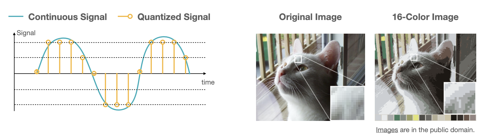
디지털로 데이터를 변환하기 위해 데이터 타입을 정하면서 이를 하나씩 양자화한다. 양수와 음수를 표현하기 위해 Unsigned Integer 에서 Signed Integer, Signed에서도 Sign-Magnitude 방식과 Two’s Complement방식으로, 그리고 더 많은 소숫점 자리를 표현하기 위해 Fixed-point에서 Floating point로 데이터 타입에서 수의 범주를 확장시킨다. 참고로 Device의 Computationality와 ML 모델의 성능지표중 하나인 FLOP이 바로 floating point operations per second이다.
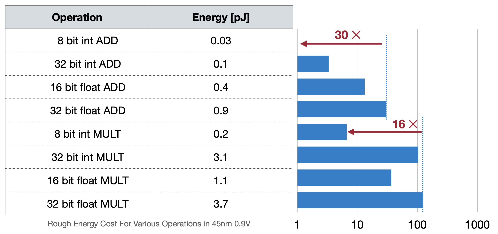
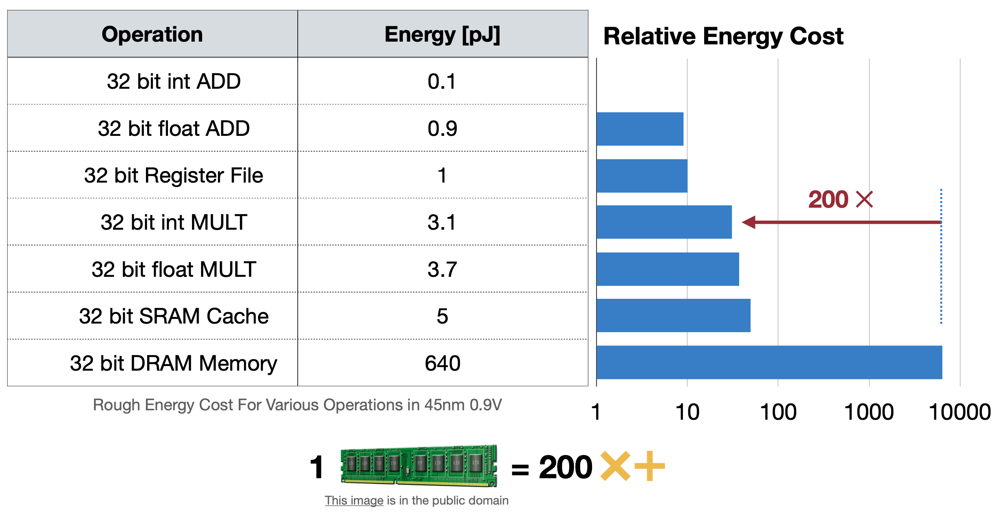
이 글에서 floating point를 이해하면, fixed point를 사용하는 것이 매모리에서, 그리고 연산에서 더 효율적일 것이라고 예상해볼 있 수 있다. ML모델을 클라우드 서버에서 돌릴 때는 크게 문제되지 않았지만 아래 두 가지 표를 보면 에너지소모, 즉 배터리 효율에서 크게 차이가 보인다. 그렇기 때문에 모델에서 Floating point를 fixed point로 더 많이 바꾸려고 하는데 이 방법으로 나온 것이 바로 Quatization이다.
이번 글에서는 Quntization 중에서 Quantization 방법과 그 중 Linear한 방법에 대해 더 자세하게, 그리고 Post-training Quantization까지 다루고, 다음 글에서는 Quantization-Aware Training, Binary/Tenary Quantization, Mixed Precision Quantization까지 다루려고 한다.
1. Common Network Quantization
앞서서 소개한 것처럼 Neural Netowork를 위한 Quantization은 다음과 같이 나눌 수 있다. Quantization 방법을 하나씩 알아보자.
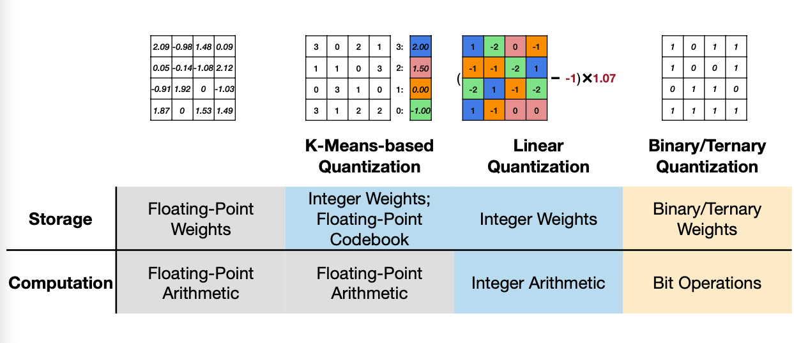
Reference. MIT-TinyML-lecture5-Quantization-1 in https://efficientml.ai
1.1 K-Means-based Quantization
그 중 첫 번째로 K-means-based Quantization이 있다. Deep Compression [Han et al., ICLR 2016] 논문에 소개했다는 이 방법은 중심값을 기준으로 clustering을 하는 방법이다. 예제를 봐보자.
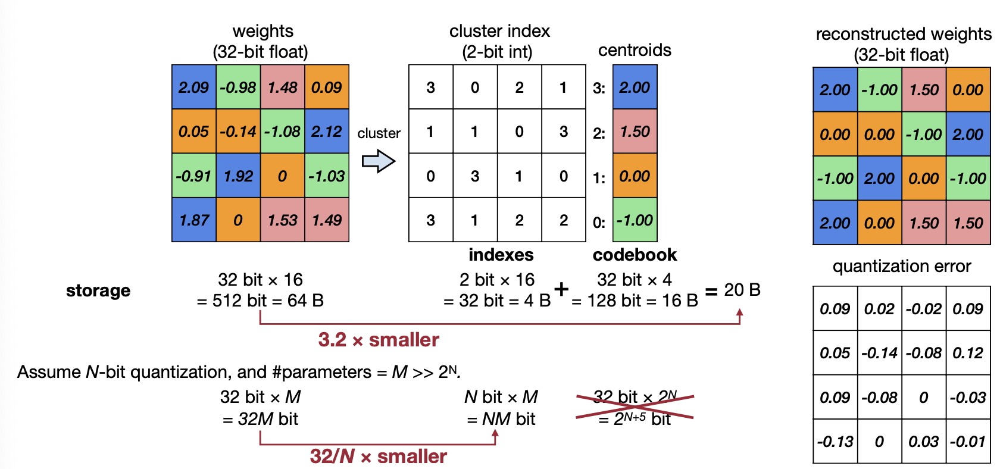
위 예제는 weight를 codebook에서 -1, 0, 1.5, 2로 나눠 각각에 맞는 인덱스로 표기한다. 이렇게 연산을 하면 기존에 64bytes를 사용했던 weight가 20bytes로 줄어든다. codebook으로 예제는 2bit로 나눴지만, 이를 N-bit만큼 줄인다면 우리는 총 32/N배의 메모리를 줄일 수 있다. 하지만 이 과정에서 quantizatio error, 즉 quantization을 하기 전과 한 후에 오차가 생기는 것을 위 예제에서 볼 수 있다. 메모리 사용량을 줄이는 것도 좋지만, 이 때문에 성능에 오차가 생기지 않게 하기위해 이 오차를 줄이는 것 또한 중요하다.
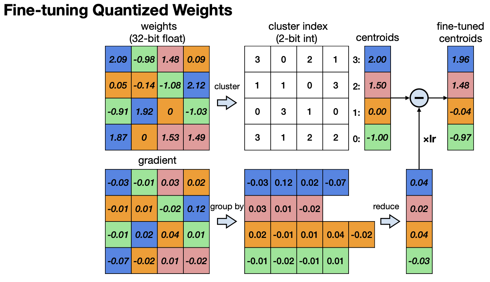
이를 보완하기 위해 Quantized한 Weight를 위에 그림처럼 Fine-tuning하기도 한다. centroid를 fine-tuning한다고 생각하면 되는데, 각 centroid에서 생기는 오차를 평균내 tuning하는 방법이다. 이 방법을 제안한 논문 에서는 Convolution 레이어에서는 4bit까지 centroid를 가졌을 때, Full-Connected layer에서는 2 bit까지 centroid를 가졌을 때 성능에 하락이 없다고 말하고 있었다.
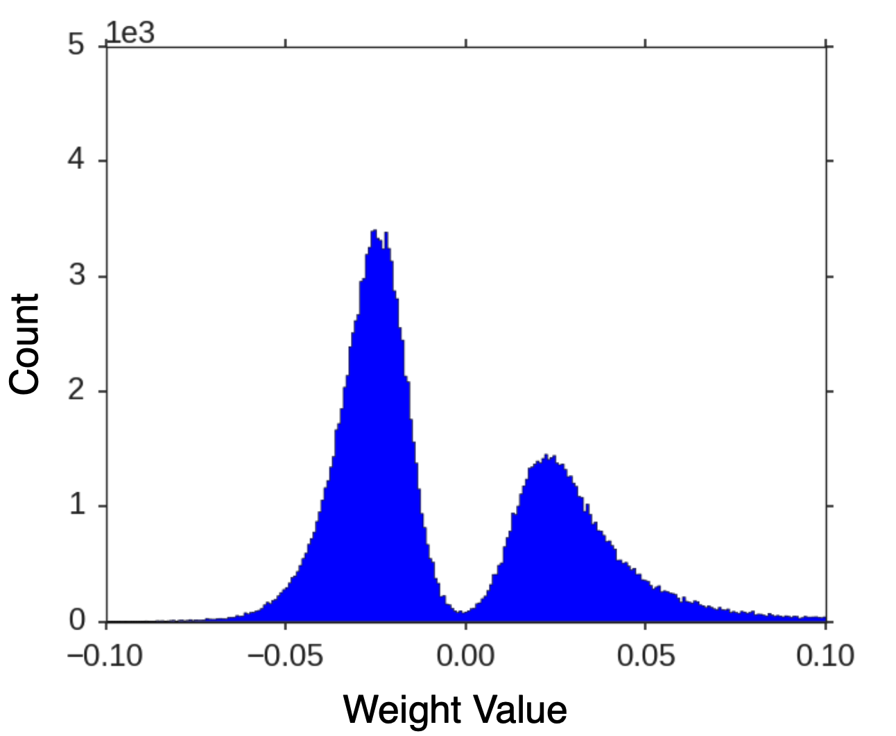
이렇게 Quantization 된 Weight는 위처럼 연속적인 값에서 아래처럼 Discrete한 값으로 바뀐다.
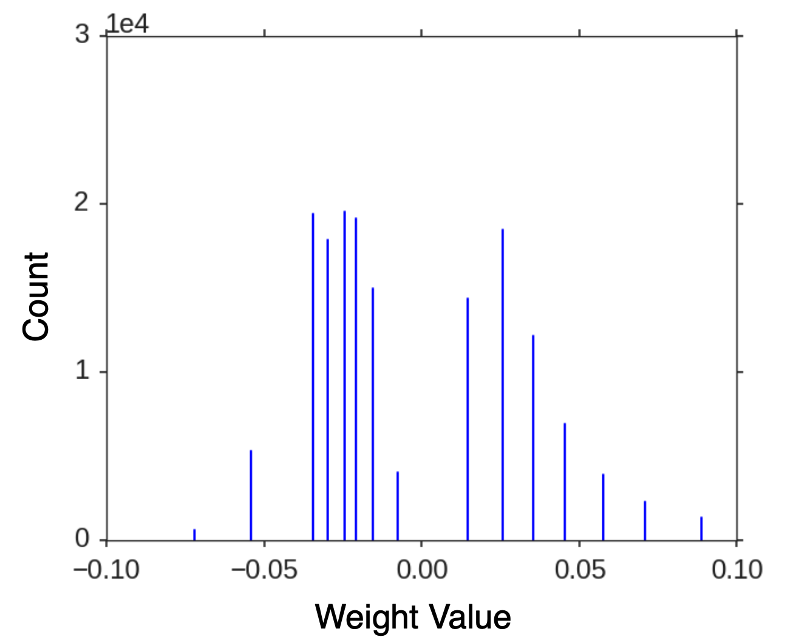
논문은 이렇게 Quantization한 weight를 한 번 더 Huffman coding를 이용해 최적화시킨다. 짧게 설명하자면, 빈도수가 높은 문자는 짧은 이진코드를, 빈도 수가 낮은 문자에는 긴 이진코드를 쓰는 방법이다. 압축 결과로 General한 모델과 압축 비율이 꽤 큰 SqueezeNet을 예로 든다. 자세한 내용은 논문을 참고하는 걸로.
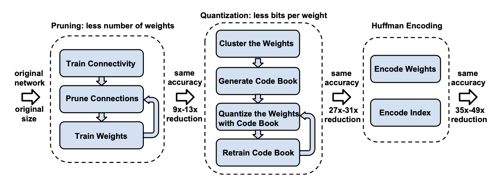
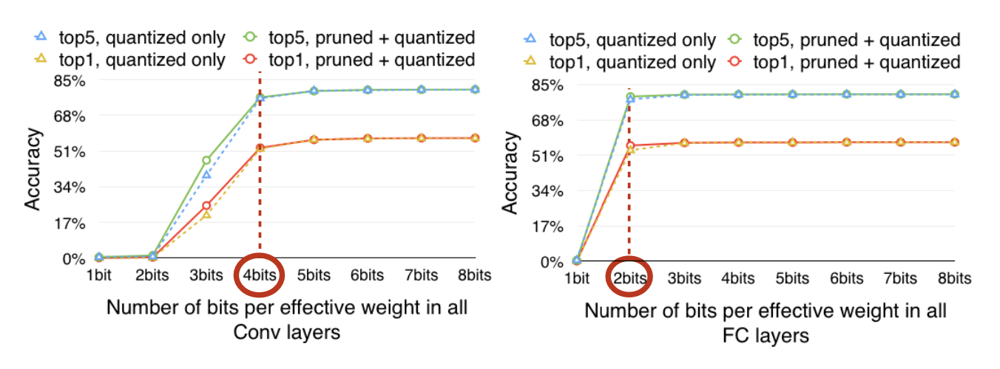
inference를 위해 weight를 Decoding하는 과정은 inference과정에서 저장한 cluster의 인덱스를 이용해 codebook에서 해당하는 값을 찾아내는 것이다. 이 방법은 저장 공간을 줄일 수는 있지만, floating point Computation이나 메모리 접근하는 방식으로 centroid를 쓰는 한계가 있을 수 밖에 없다.
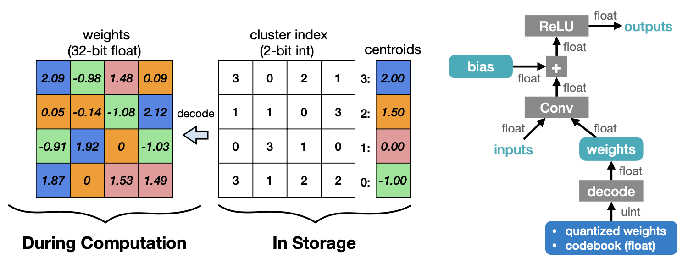
Reference. Deep Compression [Han et al., ICLR 2016]
1.2 Linear Quantization
두 번째 방법은 Linear Quatization이다. floating-point인 weight를 N-bit의 정수로 affine mapping을 시키는 방법이다. 간단하게 식으로 보는 게 더 이해가 쉽다.
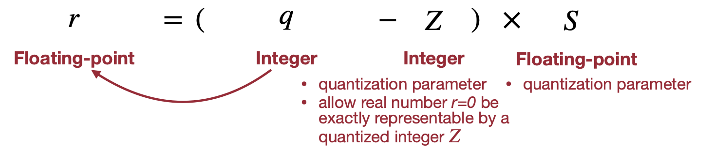
여기서 S(Scale of Linear Quantization)와 Z(Zero point of Linear Quantization)가 있는데 이 둘이 quantization parameter 로써 tuning을 할 수 있는 값인 것이다.
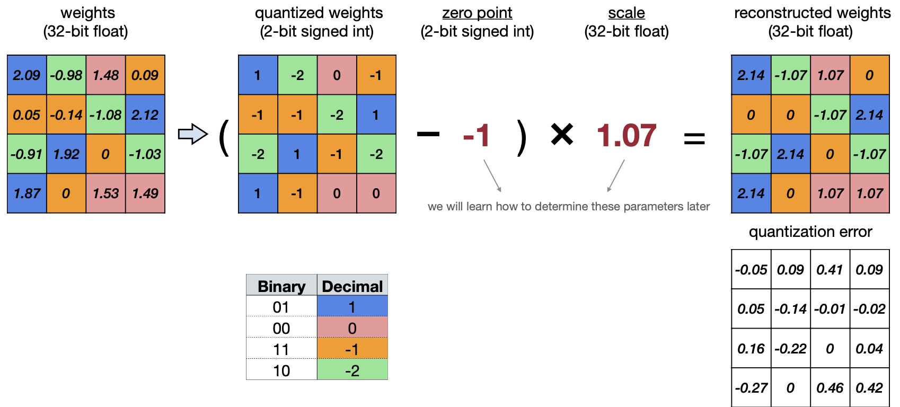
1.3 Scale and Zero point
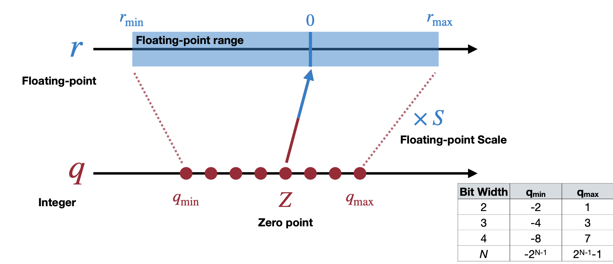
이 Scale과 Zero point 두 파라미터를 이용해서 affine mapping은 위 그림과 같다. Bit 수(Bit Width)가 낮아지면 낮아질 수록, floating point에서 표현할 있는 수 또한 줄어들 것이다. 그렇다면 Scale와 Zero point는 각각 어떻게 계산할까?
우선 floating-point 인 숫자의 범위 중 최대값과 최솟값에 맞게 두 식을 세우고 이를 연립방정식으로 Scale과 Zero point을 구할 수 있다.
Scale point \[ r_{max} = S(q_{max}-Z) \] \[ r_{min} = S(q_{min}-Z) \]
\[ r_{max} - r_{min} = S(q_{max} - q_{min}) \]
\[ S = \dfrac{r_{max}-r_{min}}{q_{max}-q_{min}} \]
Zero point \[ r_{min} = S(q_{min}-Z) \]
\[ Z=q_{min}-\dfrac{r_{min}}{S} \]
\[ Z = round\Big(q_{min}-\dfrac{r_{min}}{S}\Big) \]
예를 들어, 아래와 같은 예제에서 \(r_{max}\) 는\(2.12\) 이고 \(r_{min}\) 은 \(-1.08\) 로 Scale을 계산하면 아래 그림처럼 된다. Zero point는 \(-1\) 로 계산할 수 있다.
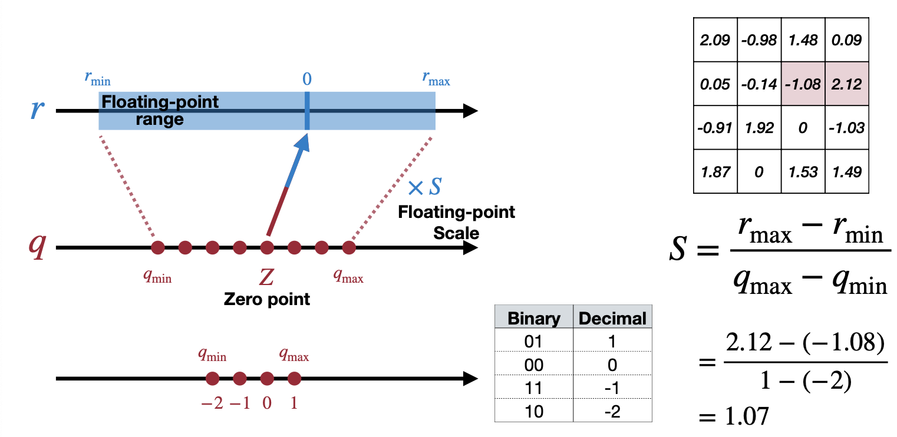
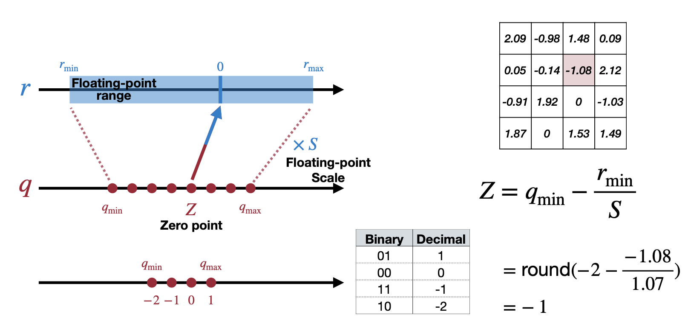
그럼 Symmetric하게 r의 범위를 제한하는 것과 같은 다른 Linear Quantization은 없을까? 이를 앞서, Quatized된 값들이 Matrix Multiplication을 하면서 미리 계산될 수 있는 수 (Quantized Weight, Scale, Zero point)가 있으니 inference시 연산량을 줄이기 위해 미리 계산할 수 있는 파라미터는 없을까?
1.4 Quantized Matrix Multiplication
입력 X, Weight W, 결과 Y가 Matrix Multiplication을 했다고 할 때 식을 계산해보자.
\[ Y=WX \]
\[ S_Y(q_Y-Z_Y) = S_W(q_W-Z_W) \cdot S_X(q_X-Z_X \]
\[ \vdots \]
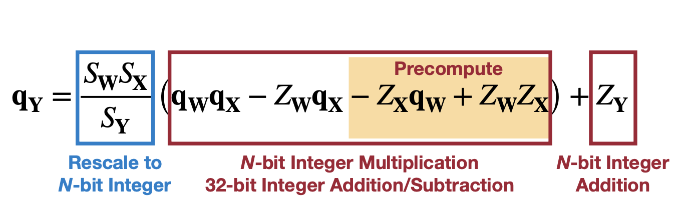
여기서 마지막 정리한 식을 살펴보면,
\(Z_x\) 와 \(q_w, Z_w, Z_X\) 의 경우는 미리 연산이 가능하다. 또 \(S_wS_X/S_Y\) 의 경우 항상 수의 범위가 \((0, 1)\) 로 \(2^{-n}M_0\) , \(M_0 \in [0.5, 1)\) 로 변형하면 N-bit Integer로 Fixed-point 형태로 표현 가능하다. 여기에 \(Z_w\)가 0이면 어떨까? 또 미리 계산할 수 있는 항이 보인다.
1.5 Symmetric Linear Quantization
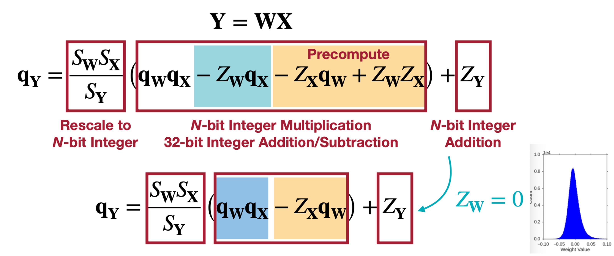
\(Z_w = 0\) 이라고 함은 바로 위와 같은 Weight 분포인데, 바로 Symmetric한 Linear Quantization으로 \(Z_w\)를 0으로 만들어 \(Z_w q_x\)항을 0으로 둘 수 있어 연산을 또 줄일 수 있을 것이다.
Symmetric Linear Quantization은 주어진 데이터에서 Full range mode와 Restrict range mode로 나뉜다.
첫 번째 Full range mode 는 Scale을 real number(데이터, weight)에서 범위가 넓은 쪽에 맞추는 것이다. 예를 들어 아래의 경우, r_min이 r_max보다 절댓값이 더 크기 때문에 r_min에 맞춰 q_min을 가지고 Scale을 구한다. 이 방법은 Pytorch native quantization과 ONNX에서 사용된다고 강의에서 소개한다.
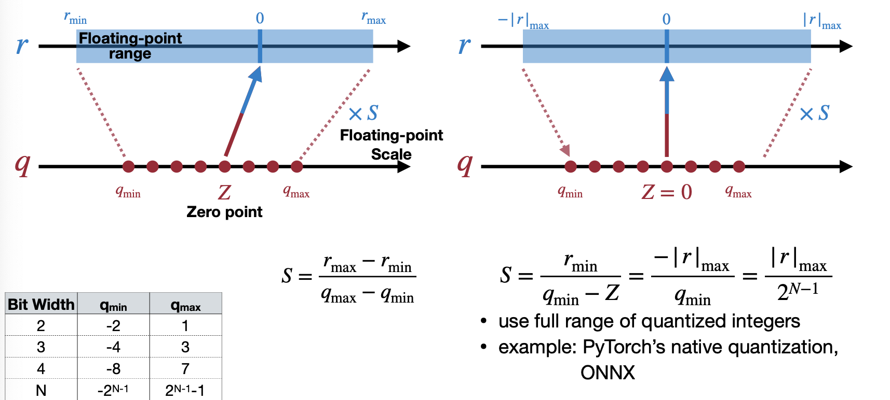
두 번째 Restrict range mode는 Scale을 real number(데이터, weight)에서 범위가 좁은 쪽에 맞추는 것이다. 예를 들어 아래의 경우, r_min가 r_max보다 절댓값이 더 크기 때문에 r_min에 맞추면서 q_max에 맞도록 Scale을 구한다. 이 방법은 TensorFlow, NVIDIA TensorRT, Intel DNNL에서 사용된다고 강의에서 소개한다.
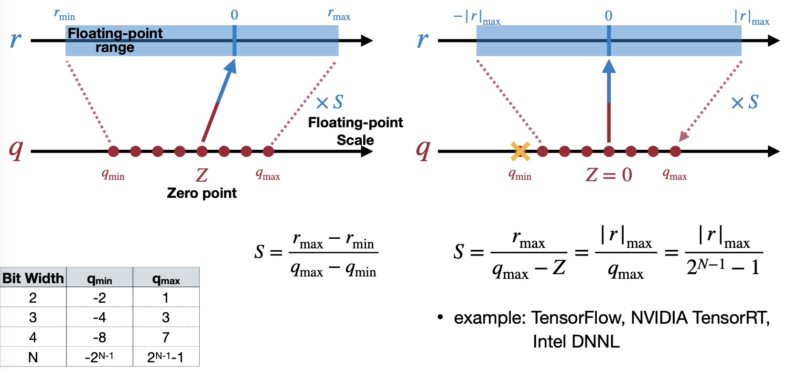
그렇다면 왜 Symmetric 써야할까? Asymmetric 방법과 Symmetric 방법의 차이는 뭘까? (feat. Neural Network Distiller) 아래 그림을 참고하면 되지만, 가장 큰 차이로 보이는 것은 Computation vs Compactful quantized range로 이해간다.
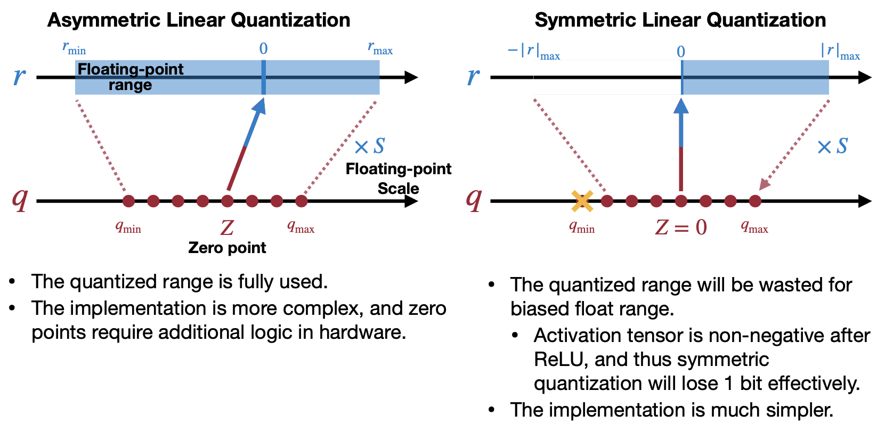
1.6 Linear Quantization examples
그럼 Quatization 방법에 대해 알아봤으니 이를 Full-Connected Layer, Convolution Layer에 적용해보고 어떤 효과가 있는지 알아보자.
1.6.1 Full-Connected Layer
아래처럼 식을 전개해보면 미리 연산할 계산할 수 있는 항과 N-bit integer로 표현할 있는 항으로 나눌 수 있다(전개하는 이유는 아마 미리 계산할 수 있는 항을 알아보기 위함이 아닐까 싶다).
\[ Y=WX+b \]
\[ \downarrow \]
\[ S_Y(q_Y - Z_Y) = S_W(q_W - Z_W) \cdot S_X(q_X - Z_X) + S_b(q_b - Z_b) \]
\[ \downarrow \ Z_w=0 \]
\[ S_Y(q_Y - Z_Y) = S_WS_X(q_Wq_X - Z_xq_W) + S_b(q_b - Z_b) \]
\[ \downarrow \ Z_b=0, S_b=S_WS_X \]
\[ S_Y(q_Y - Z_Y) = S_WS_X(q_Wq_X - Z_xq_W+q_b) \]
\[ \downarrow \]
\[ q_Y = \dfrac{S_WS_X}{S_Y}(q_Wq_X+q_b - Z_Xq_W) + Z_Y \]
\[ \downarrow \ q_{bias}=q_b-Z_xq_W\\ \]
\[ q_Y = \dfrac{S_WS_X}{S_Y}(q_Wq_X+ q_{bias}) + Z_Y\\ \]
간단히 표기하기 위해 \(Z_W=0, Z_b=0, S_b = S_W S_X\) 이라고 가정한다.
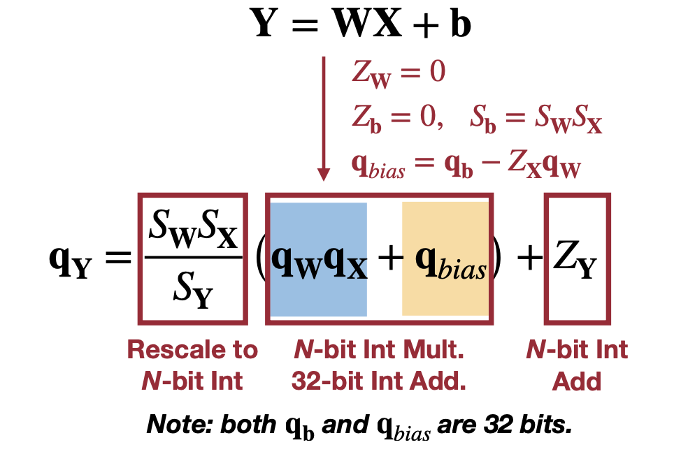
1.6.2 Convolutional Layer
Convolution Layer의 경우는 Weight와 X의 곱의 경우를 Convolution으로 바꿔서 생각해보면 된다. 그도 그럴 것이 Convolution은 Kernel과 Input의 곱의 합으로 이루어져 있기 때문에 Full-Connected와 거의 유사하게 전개될 수 있을 것이다.
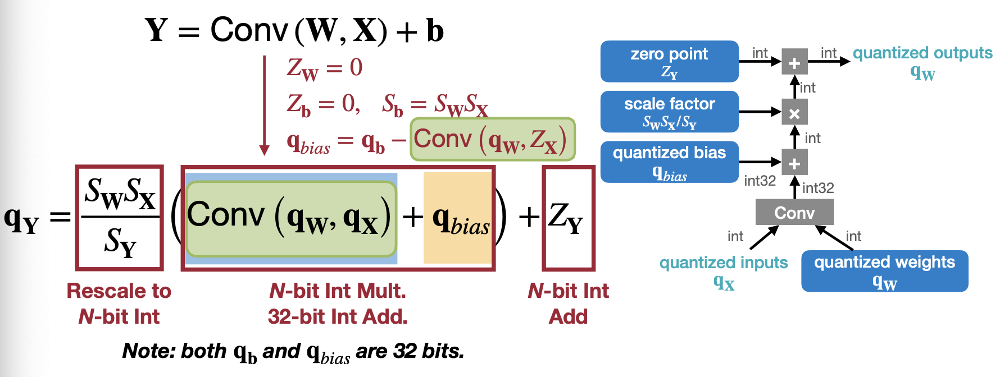
2. Post-training Quantization (PTQ)
그럼 앞서서 Quantizaed한 Layer를 Fine tuning할 없을까? “How should we get the optimal linear quantization parameters (S, Z)?” 이 질문에 대해서 Weight, Activation, Bias 세 가지와 그에 대하여 논문에서 보여주는 결과까지 알아보자.
2.1 Weight quantization
TL;DR. 이 강의에서 소개하는 Weight quantization은 Grandularity에 따라 Whole(Per-Tensor), Channel, 그리고 Layer로 들어간다.
2.1.1 Granularity
Weight quantization에서 Granularity에 따라서 Per-Tensor, Per-Channel, Group, 그리고 Generalized 하는 방법으로 확장시켜 Shared Micro-exponent(MX) data type을 차례로 보여준다. Scale을 몇 개나 둘 것이냐, 그 Scale을 적용하는 범위를 어떻게 둘 것이냐, 그리고 Scale을 얼마나 디테일하게(e.g. floating-point)할 것이냐에 초점을 둔다.
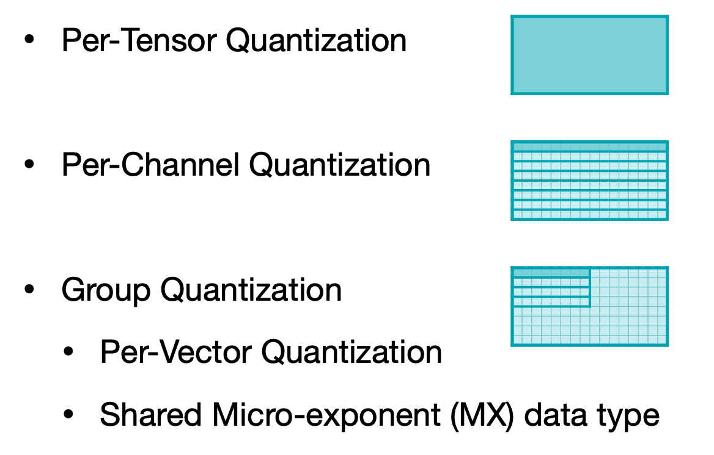
첫 번째는 Per-Tensor Quantization 특별하게 설명할 것 없이 이전까지 설명했던 하나의 Scale을 사용하는 Linear Quantization이라고 생각하면 되겠다. 특징으로는 Large model에 대해서는 성능이 괜찮지만 작은 모델로 떨어지면 성능이 급격하게 떨어진다고 설명한다. Channel별로 weight 범주가 넓은 경우나 outlier weight가 있는 경우 quantization 이후에 성능이 하락했다고 말한다.
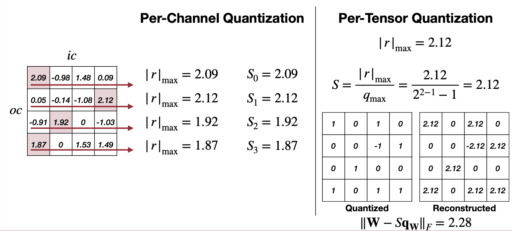
그래서 그 해결방안으로 나오는 것이 두 번째 방법인 Per-Channel Quantization이다. 위 예제에서 보면 Channel 마다 최대값과 각각에 맞는 Scale을 따로 가지는 것을 볼 수 있다. 그리고 적용한 결과인 아래 그림을 보면 Per-Channel과 Per-Tensor를 비교해보면 Per-Channel이 기존에 floating point weight와의 차이가 더 적다. 하지만, 만약 하드웨어에서 Per-Channel Quantization을 지원하지 않는다면 불필요한 연산을 추가로 해야하기 때문에 이는 적합한 방법이 될 수 없다는 점도 고려해야할 것이다(이는 이전 Tiny Engine에 대한 글에서 Channel내에 캐싱을 이용한 최적화와 연관이 있다). 그럼 또 다른 방법은 없을까?
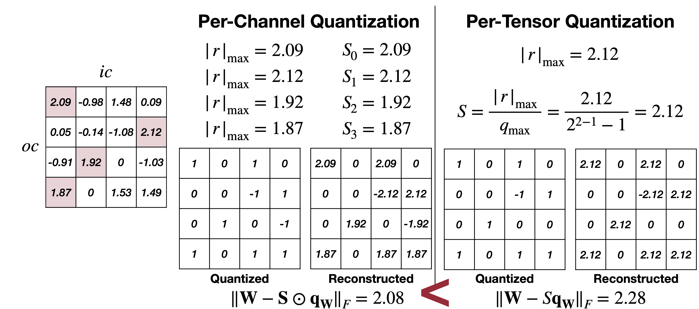
세 번째 방법은 Group Quantization으로 소개하는 Per-vector Scaled Quantization와 Shared Micro-exponent(MX) data type 이다. Per-vector Scaled Quantization은 2023년도 강의부터 소개하는데, 이 방법은 Scale factor를 그룹별로 하나, Per-Tensor로 하나로 두개를 두는 방법이다. 아래의 그림을 보면,
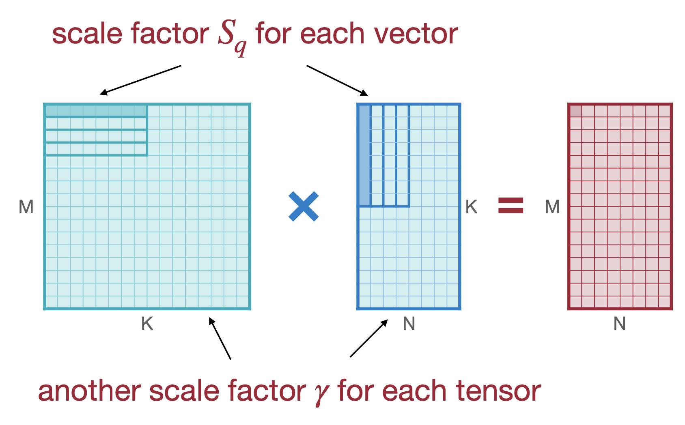
\[ r=S(q-Z) \rightarrow r=\gamma \cdot S_{q}(q-Z) \]
\(S_q\) 로 vector별 스케일링을 하나, \(\gamma\) 로 Tensor에 스케일링을 하며 감마는 floating point로 하는 것을 볼 수있다. 아무래도 vector단위로 스케일링을 하게되면 channel과 비교해서 하드웨어 플랫폼에 맞게 accuracy의 trade-off를 조절하기 더 수월할 것으로 보인다.
여기서 강의는 지표인 Memory Overhead로 “Effective Bit Width”를 소개한다. 이는 Microsoft에서 제공하는 Quantization Approach MX4, MX6, MX9과 연결돼 있는데, 이 데이터타입은 조금 이후에 더 자세히 설명할 것이다. Effective Bit Width? 예시 하나를 들어 이해해보자. 만약 4-bit Quatization을 4-bit per-vector scale을 16 elements(4개의 weight가 각각 4bit를 가진다고 생각하면 16 element로 계산된다 유추할 있다) 라면, Effective Bit Width는 4(Scale bit) + 4(Vector Scale bit) / 16(Vector Size) = 4.25가 된다. Element당 Scale bit라고 간단하게 생각할 수도 있을 듯 싶다.
마지막 Per-vector Scaled Quantization을 이해하다보면 이전에 Per-Tensor, Per-Channel도 그룹으로 얼마만큼 묶는 차이가 있고, 이는 이들을 일반화할 수 있어 보인다. 강의에서 바로 다음에 소개하는 방법이 바로 Multi-level scaling scheme이다. Per-Channel Quantization와 Per-Vector Quantization(VSQ, Vector-Scale Quantization)부터 봐보자.
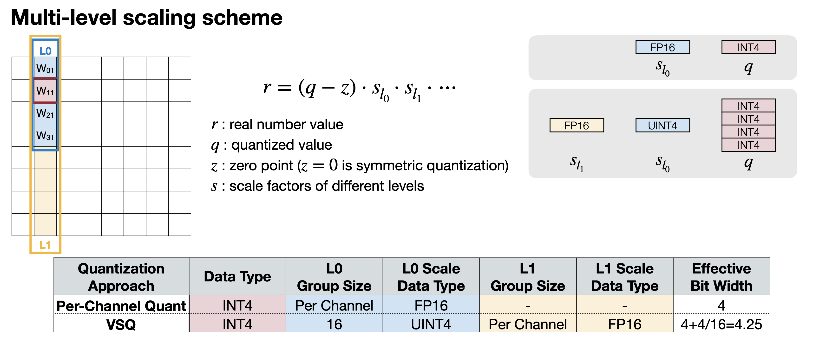
Per-Channel Quantization는 Scale factor가 하나로 Effective Bit Width는 4가 된다. 그리고 VSQ는 이전에 계산했 듯 4.25가 될 것이다(참고로 Per Channel로 적용되는 Scale의 경우 element의 수가 많아서 그런지 따로 Effective Bit Width로 계산하지는 않는다). VSQ까지 보면서 Effective Bit Width는,
Effective Bit Width = Scale bit + Group 0 Scale bit / Group 0 Size +...
e.g. VSQ Data type int4 = Scale bit (4) + Group 0 Scale bit(4) / Group 0 Size(16) = 4.25이렇게 계산할 수 있다. 그리고, MX4, MX6, MX9가 나온다. 참고로 S는 Sign bit, M은 Mantissa bit, E는 Exponent bit를 의미한다(Mantissa나 Exponent에 대한 자세한 내용은 floating point vs fixed point 글을 참고하자). 아래는 Microsoft에서 제공하는 Quantization Approach MX4, MX6, MX9에 대한 표이다.
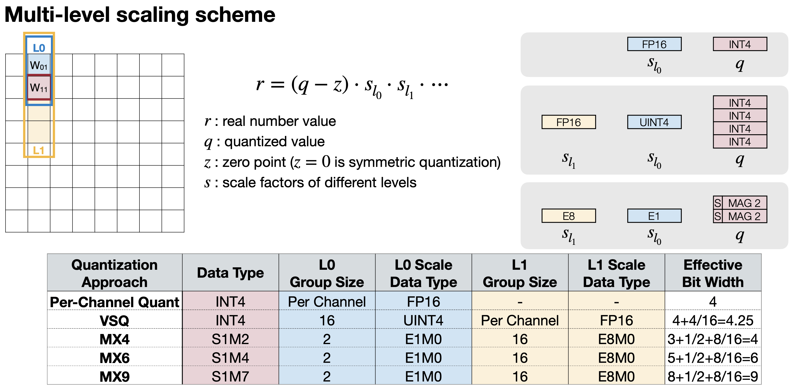
2.1.2 Weight Equalization
여기까지 Weight Quatization에서 그룹으로 얼마만큼 묶는지에 따라(강의에서는 Granularity) Quatization을 하는 여러 방법을 소개했다. 다음으로 소개 할 방법은 Weight Equalization이다. 2022년에 소개해준 내용인데, 이는 i번째 layer의 output channel를 scaling down 하면서 i+1번째 layer의 input channel을 scaling up 해서 Scale로 인해 Quantization 전후로 생기는 Layer간 차이를 줄이는 방법이다.
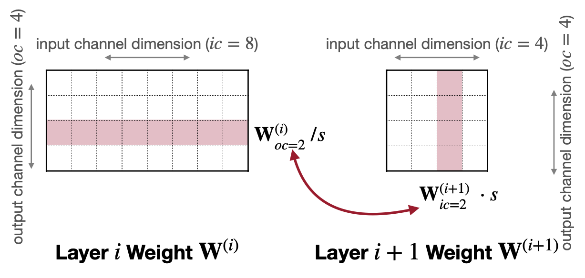
예를 들어 위에 그림처럼 Layer i의 output channel과 Layer i+1의 input channel이 있다. 여기서 식을 전개하면 아래와 같은데,
\[ \begin{aligned} y^{(i+1)}&=f(W^{(i+1)}x^{(i+1)}+b^{(i+1)}) \\ &=f(W^{(i+1)} \cdot f(W^{(i)}x^{(i)}+b^{(i)}) +b^{(i+1)}) \\ &=f(W^{(i+1)}S \cdot f(S^{-1}(W^{(i)}x^{(i)}+S^{-1}b^{(i)})) +b^{(i+1)}) \end{aligned} \]
where \(S = diag(s)\) , \(s_j\) is the weight equalization scale factor of output channel \(j\)
여기서 Scale(S)가 i+1번째 layer의 weight에, i번째 weight에 1/S 로 Scale될 떄 기존에 Scale 하지 않은 식과 유사하게 유지할 있는 것을 볼 수 있다. 즉,
\[ r^{(i)}_{oc_j} / s = r^{(i+1)}_{ic_j} \cdot s \]
\[ s_j = \dfrac{1}{r^{(i+1)}_{ic=j}}\sqrt{r_{oc=j}^{(i)}\cdot r_{ic=j}^{(i+1)}} \]
\[ r^{(i)}_{oc_j} = r^{(i)}_{oc_j} / s = \sqrt{r_{oc=j}^{(i)}\cdot r_{ic=j}^{(i+1)}} \]
\[ r^{(i)}_{ic_j} =r^{(i)}_{ic_j} \cdot s = \sqrt{r_{oc=j}^{(i)}\cdot r_{ic=j}^{(i+1)}} \]
이렇게 하면 i번째 layer의 output channel과 i+1번째 layer의 input channel의 Scale을 각각 \(S\) 와 \(1/S\) 로하며 weight간의 격차를 줄일 수 있다.
2.1.3 Adaptive rounding
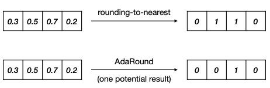
$$ ### 2.2 Activation quantization 두 번째로 Activation quantization이 있다. 모델결과로 나오는 결과를 직접적으로 결정하는 Activation Quatization에서는 두 가지를 고려한 방법을 소개한다. 하나는 Activation 레이어에서 결과값을 Smoothing한 분포를 가지게 하기 위해 Exponential Moving Average(EMA)를 사용하는 방법이고, 다른 하나는 다양한 입력값을 고려해 batch samples을 FP32 모델과 calibration하는 방법이다.
Exponential Moving Average (EMA)은 아래 식에서 \(\alpha\) 를 구하는 방법이다. \[ \hat r^{(t)}_{max, min} = \alpha r^{(t)}_{max, min} + (1-\alpha) \hat r^{(t)}_{max, min} \] Calibration의 컨셉은 많은 input의 min/max 평균을 이용하자는 것이다. 그래서 trained FP32 model과 sample batch를 가지고 quantized한 모델의 결과와 calibration을 돌리면서 그 차이를 최소화 시키는데, 여기에 이용하는 지표는 loss of information와 Newton-Raphson method를 사용한 Mean Square Error(MSE)가 있다. \[ MSE = \underset{\lvert r \lvert_{max}}{min}\ \mathbb{E}[(X-Q(X))^2] \] \[ KL\ divergence=D_{KL}(P\lvert\lvert Q) = \sum_i^N P(x_i)log\dfrac{P(x_i)}{Q(x_i)} \] ### 2.3 Quanization Bias Correction
마지막으로 Quatization으로 biased error를 잡는다는 것을 소개한다. \(\epsilon = Q(W)-W\) 이라고 두고 아래처럼 식이 전개시키면 마지막 항에서 보이는 \(-\epsilon\mathbb{E}[x]\) 부분이 bias를 quatization을 할 때 제거 된다고 한다(이 부분은 2023년에는 소개하진 않는데, 당연한 것이어서 안하는지, 혹은 영향이 크지 않아서 그런지는 모르겠다. Bias Quatization이후에 MobileNetV2에서 한 레이어의 output을 보면 어느정도 제거되는 것처럼 보인다). \[ \begin{aligned} \mathbb{E}[y] &= \mathbb{E}[Wx] + \mathbb{E}[\epsilon x] - \mathbb{E}[\epsilon x],\ \mathbb{E}[Q(W)x] = \mathbb{E}[Wx] + \mathbb{E}[\epsilon x] \\ \mathbb{E}[y] &= \mathbb{E}[Q(W)x] - \epsilon\mathbb{E}[x] \end{aligned} \]
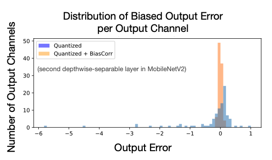
2.4 Post-Training INT8 Linear Quantization Result
앞선 Post-Training Quantization을 적용한 결과를 보여준다. 이미지계열 모델을 모두 사용했으며, 성능하락폭은 지표로 보여준다. 비교적 큰 모델들의 경우 준수한 성능을 보여주지만 MobileNetV1, V2와 같은 작은 모델은 생각보다 Quantization으로 떨어지는 성능폭(-11.8%, -2.1%) 이 큰 것을 볼 수 있다. 그럼 작은 크기의 모델들은 어떻게 Training 해야할까?
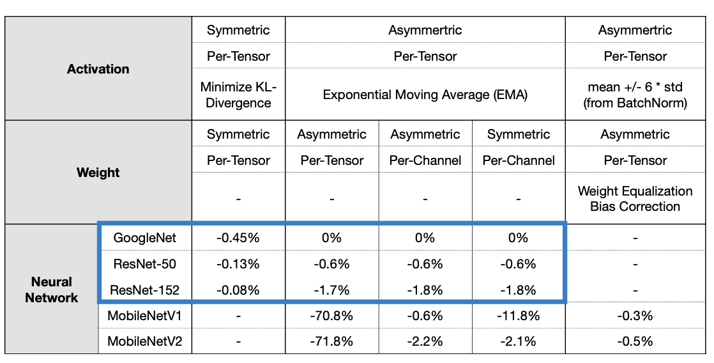
3. Quantization-Aware Training(QAT)
3.1 Quantization-Aware Training
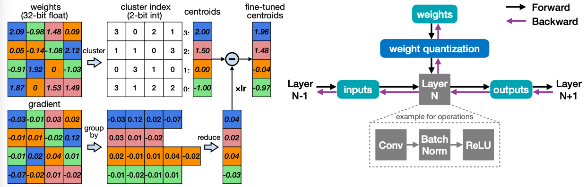
- Usually, fine-tuning a pre-trained floating point model provides better accuracy than training from scratch.
이전에 K-mean Quantization에서 Fine-tuning때 Centroid에 gradient를 반영했었다. Quantization-Aware Training은 이와 유사하게 Quantization - Reconstruction을 통해 만들어진 Weight로 Training을 하는 방법을 말한다. 예시를 들어서 자세히 살펴보자.

- A full precision copy of the weights W is maintained throughout the training.
- The small gradients are accumulated without loss of precision
- Once the model is trained, only the quantized weights are used for inference
위 그림에서 Layer N이 보인다. 이 Layer N은 weights를 파라미터로 가지지만, 실제로 Training 과정에서 쓰이는 weight는 “weight quantization”을 통해 Quantization - Reconstruction을 통해 만들어진 Weight를 가지고 훈련을 할 것이다.
3.2 Straight-Through Estimator(STE)

그럼 훈련에서 gradient는 어떻게 전달할 수 있을까? Quantization의 개념상, weight quantization에서 weight로 넘어가는 gradient는 없을 수 밖에 없다. 그렇게 되면 사실상 weight로 back propagation이 될 수 없게 되고, 그래서 소개하는 개념이 Straight-Through Estimator(STE) 입니다. 말이 거창해서 그렇지, Q(W)에서 받은 gradient를 그대로 weights 로 넘겨주는 방식이다.
Quantization is discrete-valued, and thus the derivative is 0 almost everywhere → NN will learn nothing!
Straight-Through Estimator(STE) simply passes the gradients through the quantization as if it had been the identity function.
\[ g_W = \dfrac{\partial L}{\partial W} = \dfrac{\partial L}{\partial Q(W)} \]

- Reference
- Neural Networks for Machine Learning [Hinton et al., Coursera Video Lecture, 2012]
- Estimating or Propagating Gradients Through Stochastic Neurons for Conditional Computation [Bengio, arXiv 2013]
이 훈련의 결과가 궁금하시다면 이 논문을 참고하자. 참고로 논문에서는 MobileNetV1, V2 그리고 NASNet-Mobile을 이용해 Post-Training Quantization과 Quantization-Aware Training을 비교하고 있다.
4. Binary and Ternary Quantization
자, 그럼 Quantization을 궁극적으로 2bit로 할 수는 없을까? 바로 Binary(1, -1)과 Tenary(1, 0, -1) 이다.
Can we push the quantization precision to 1 bit?

Reference. MIT-TinyML-lecture06-Quantization-2 Reference
- BinaryConnect: Training Deep Neural Networks with Binary Weights during Propagations [Courbariaux et al., NeurIPS 2015]
- XNOR-Net: ImageNet Classification using Binary Convolutional Neural Networks [Rastegari et al., ECCV 2016]
먼저 Weight를 2bit로 Quantization을 하게 되면, 메모리에서는 32bit를 1bit로 줄이니 32배나 줄일 수 있고, Computation도 (8x5)+(-3x2)+(5x0)+(-1x1)에서 5-2+0-1 로 절반을 줄일 수 있다.
4.1 Binarization: Deterministic Binarization
그럼 Binarization에서 +1과 -1을 어떤 기준으로 해야할까? 가장 쉬운 방법은 threhold를 기준으로 +-1로 나누는 것이다.
Directly computes the bit value base on a threshold, usually 0 resulting in a sign function.
\[ q = sign(r) = \begin{dcases} +1, &r \geq 0 \\ -1, &r < 0 \end{dcases} \]
4.2 Binarization: Stochastic Binarization
다른 방법으로는 output에서 hard-sigmoid function을 거쳐서 나온 값만큼 확률적으로 +-1이 나오도록 하는 것이다. 하지만 이 방법은 무작위로 비트를 생성하는 하드웨어를 하는 것이 어렵기 때문에 사용하진 않는다고 언급한다.
Use global statistics or the value of input data to determine the probability of being -1 or +1
In Binary Connect(BC), probability is determined by hard sigmoid function \(\sigma(r)\)
\[ q=\begin{dcases} +1, &\text{with probability } p=\sigma(r)\\ -1, & 1-p \end{dcases} \\ where\ \sigma(r)=min(max(\dfrac{r+1}{2}, 0), 1) \]

Reference. MIT-TinyML-lecture06-Quantization-2 Harder to implement as it requires the hardware to generate random bits when quantizing.
4.3 Binarization: Use Scale
앞선 방법을 이용해서 ImageNet Top-1 을 평가해보면 Quantization이후 -21.2%나 성능이 하락하는 걸 볼 수 있다. “어떻게 보완할 수 있을까?” 한 것이 linear qunatization에서 사용했던 Scale 개념이다.
Using Scale, Minimizing Quantization Error in Binarization

Reference. MIT-TinyML-lecture06-Quantization-2
여기서 Scale은 \(\dfrac{1}{n}\lvert\lvert W \lvert\lvert_1\) 로 계산할 수 있고, 성능은 하락이 거의 없는 것도 확인할 수 있다. 왜 \(\dfrac{1}{n}\lvert\lvert W \lvert\lvert_1\)인지는 아래 증명과정을 참고하자!
Why \(\alpha\) is \(\dfrac{1}{n}\lvert\lvert W \lvert\lvert_1\)?
\[ \begin{aligned} &J(B, \alpha)=\lvert\lvert W-\alpha B\lvert\lvert^2 \\ &\alpha^*, B^*= \underset{\alpha, B}{argmin}\ J(B, \alpha) \\ &J(B,\alpha) = \alpha^2B^TB-2\alpha W^T B + W^TW\ since\ B \in \{+1, -1\}^n \\ &B^TB=n(constant), W^TW= constant(a \ known\ variable) \\ &J(B,\alpha) = \alpha^2n-2\alpha W^T B + C \\ &B^* = \underset{B}{argmax} \{W^T B\}\ s.t.\ B\in \{+1,-1 \}^n \\ &\alpha^*=\dfrac{W^TB^*}{n} \\ &\alpha^*=\dfrac{W^Tsign(W)}{n} = \dfrac{\lvert W_i \lvert}{n} = \dfrac{1}{n}\lvert\lvert W\lvert\lvert_{l1} \end{aligned} \]
- Reference. XNOR-Net: ImageNet Classification using Binary Convolutional Neural Networks [Rastegari et al., ECCV 2016]
- B*는 J(B,\(\alpha\))에서 최솟값을 구해야하므로 \(W^T\)B 가 최대여야하고 그러기 위해서는 W가 양수일때는 B도 양수, W가 음수일 때는 B도 음수여야 \(W^TB=\sum\lvert W \lvert\) 이 되면서 최댓값이 될 수 있다.
4.4 Binarization: Activation
그럼 Activation까지 Quantization을 해봅시다.
4.4.1 Activation

여기서 조금 더 연산을 최적화 할 수 있어보이는 것이 Matrix Muliplication이 XOR 연산과 비슷하게 보인다.
4.4.2 XNOR bit count

- \(y_i=-n+ popcount(W_i\ xnor\ x) << 1\) → popcount returns the number of 1
그래서 popcount과 XNOR을 이용해서 Computation에서 좀 더 최적화를 진행합니다. 이렇게 최적화를 진행하게 되면, 메모리는 32배, Computation은 58배가량 줄어들 수 있다고 말한다.

이렇게 Weight, Scale factor, Activation, 그리고 XNOR-Bitcout 까지. 총 네 가지 단계로 Binary Quantization을 나눈다. 다음으로는 Ternary Quantization은 알아보자.

- Binarizing Input 의 경우는 average를 모든 channel에 같이 적용할 것이기 때문에 그 c만큼을 average filter로 한 번에 적용한다는 말이다.
4.5 Ternary Weight Networks(TWN)
Ternary는 Binary Quantization과 단계는 모두 같지만, 가질 수 있는 값으로 0 을 추가한다. 아래 그림은 Scale을 이용해서 Quantization Error를 줄이는 방법을 말하고 있다. \[
q = \begin{dcases}
r_t, &r > \Delta \\
0, &\lvert r\lvert \leq \Delta \\
-r_t, &r < -\Delta
\end{dcases} \\
where\ \Delta = 0.7\times \mathbb{E}(\lvert r \lvert), r_t = \mathbb{E}_{\lvert r \lvert > \Delta}(\lvert r \lvert )
\] ![Reference. Trained Ternary Quantization [Zhu et al., ICLR 2017]](../../images/lec05/2/Untitled 11.png) ### 4.6 Trained Ternary Quantization(TTQ)
### 4.6 Trained Ternary Quantization(TTQ)
Tenary Quantization에서 또 한가지 다르게 설명하는 것은 1과 -1로만 정해져 있던 Binary Quantization과 다르게 Tenary는 1, 0, -1로 Quantization을 한 후, 추가적인 훈련을 통해 \(w_t\)와 \(-w_t\)로 fine-tuning을 하는 방법도 제안한다(해당 논문에서는 이러한 기법을 이용해서 한 결과를 CIFAR-10 이미지 데이터를 가지고 ResNets, AlexNet, ImageNet에서 보여준다). \[
q = \begin{dcases}
w_t, &r > \Delta \\
0, &\lvert r\lvert \leq \Delta \\
-w_t, &r < -\Delta
\end{dcases}
\] ![Reference. Trained Ternary Quantization [Zhu et al., ICLR 2017]](../../images/lec05/2/Untitled 12.png)
4.7 Accuracy Degradation
Binary, Ternary Quantization을 사용한 결과를 보여준다(Resnet-18 경우에는 Ternary 가 오히려 Binary보다 성능이 더 떨어진다!)
Binarization

Reference. Binarized Neural Networks: Training Deep Neural Networks with Weights and Activations Constrained to +1 or −1. [Courbariaux et al., Arxiv 2016], XNOR-Net: ImageNet Classification using Binary Convolutional Neural Networks [Rastegari et al., ECCV 2016] Ternary Weight Networks (TWN)

Reference. Ternary Weight Networks [Li et al., Arxiv 2016] Trained Ternary Quantization (TTQ)

Reference. Trained Ternary Quantization [Zhu et al., ICLR 2017]
5. Low Bit-Width Quantization
남은 부분들은 여러가지 실험 / 연구들을 소개하고 있다.
- Binary Quantization은 Quantization Aware Training을 할 수 있을까?
- 2,3 bit과 8bit 그 중간으로는 Quantization을 할 수 없을까?
- 레이어에서 Quantization을 하지 않는 레이어, 예를 들어 결과에 영향을 예민하게 미치는 첫 번째 레이어가 같은 경우 Quantization을 하지 않으면 어떻게 될까?
- Activation 함수를 바꾸면 어떨까?
- 예를 들어 첫번째 레이어의 N배 넓게 하는 것과 같이 모델 구조를 바꾸면 어떻게 될까?
- 조금씩 Quantization을 할 수 없을까? (20% → 40% → … → 100%)
강의에서는 크게 언급하지 않고 간 내용들이라 설명을 하지는 않겠다. 해당 내용들은 자세한 내용을 알고싶으면 각 파트에 언급된 논문을 참조하길!
5.1 Train Binarized Neural Networks From Scratch
- Straight-Through Estimator(STE)

- Gradient pass straight to floating-point weights
- Floating-point weight with in [-1, 1]
- Reference. Binarized Neural Networks: Training Deep Neural Networks with Weights and Activations Constrained to +1 or −1. [Courbariaux et al., Arxiv 2016]
5.2 Quantization-Aware Training: DoReFa-Net With Low Bit-Width Gradients

Gradient Quantization
\[ Q(g) = 2 \cdot max(\lvert G \lvert) \cdot \Large[ \small quantize_k \Large( \small \dfrac{g}{2\cdot max(\lvert G \lvert)} + \dfrac{1}{2} + N(k) \Large ) \small -\dfrac{1}{2} \Large]\small \] \[ where\ N(k)=\dfrac{\sigma}{2^k-1} and\ \sigma \thicksim Uniform(-0.5, 0.5) \]
- Noise function \(N(k)\) is added to compensate the potential bias introduced by gradient quantization.
Result

Reference. DoReFa-Net: Training Low Bitwidth Convolutional Neural Networks with Low Bitwidth Gradients [Zhou et al., arXiv 2016]
5.3 Replace the Activation Function: Parameterized Clipping Activation Function
The most common activation function ReLU is unbounded. The dynamic range of inputs becomes problematic for low bit-width quantization due to very limited range and resolution.
ReLU is replaced with hard-coded bounded activation functions: ReLU6, ReLU1, etc
The clipping value per layer can be learned as well: PACT(Parametrized Clipping Activation Function)
![Reference. PACT: Parameterized Clipping Activation for Quantized Neural Networks [Choi et al., arXiv 2018]](../../images/lec05/2/Untitled 19.png) \[
y=PACT(x;\alpha) = 0.5(\lvert x \lvert - \lvert x -\alpha \lvert + \alpha ) = \begin{dcases}
0, & x \in [-\infty, 0) \\
x, & x \in [0, \alpha) \\
\alpha, & x \in [\alpha, +\infty)
\end{dcases}
\]
\[
y=PACT(x;\alpha) = 0.5(\lvert x \lvert - \lvert x -\alpha \lvert + \alpha ) = \begin{dcases}
0, & x \in [-\infty, 0) \\
x, & x \in [0, \alpha) \\
\alpha, & x \in [\alpha, +\infty)
\end{dcases}
\]The upper clipping value of the activation function is a trainable. With STE, the gradient is computed as
\[ \dfrac{\partial Q(y)}{\partial \alpha} = \dfrac{\partial Q(y)}{\partial y} \cdot \dfrac{\partial y}{\partial \alpha} = \begin{dcases} 0 & x \in (-\infty, \alpha)\\ 1 & x \in [\alpha, +\infty)\\ \end{dcases} \]
\[ \rightarrow \dfrac{\partial L}{\partial \alpha} = \dfrac{\partial L}{\partial Q(y)} \cdot \dfrac{\partial Q(y)}{\partial \alpha} = \begin{dcases} 0 & x \in (-\infty, \alpha)\\ \frac{\partial L}{\partial Q(y)} & x \in [\alpha, +\infty)\\ \end{dcases} \]
The larger \(\alpha\), the more the parameterized clipping function resembles a ReLU function
- To avoid large quantization errors due to a wide dynamic range \([0, \alpha]\), L2-regularizer for \(\alpha\) is included in the training loss function.
Result

Reference. PACT: Parameterized Clipping Activation for Quantized Neural Networks [Choi et al., arXiv 2018]
5.4 Modify the Neural Network Architecture
Widen the neural network to compensate for the loss of information due to quantization
ex. Double the channels, reduce the quantization precision

Reference. WRPN: Wide Reduced-Precision Networks [Mishra et al., ICLR 2018] Replace a single floating-point convolution with multiple binary convolutions.
- Towards Accurate Binary Convolutional Neural Network [Lin et al., NeurIPS 2017]
- Quantization [Neural Network Distiller]
5.5 No Quantization on First and Last Layer
- Because it is more sensitive to quantization and small portion of the overall computation
- Quantizing these layers to 8-bit integer does not reduce accuracy
5.6 Iterative Quantization: Incremental Network Quantization
- Reference. Incremental Network Quantization: Towards Lossless CNNs with Low-precision Weights [Zhou et al., ICLR 2017]

- Setting
- Weight quantization only
- Quantize weights to \(2^n\) for faster computation (bit shift instead of multiply)
- Algorithm
- Start from a pre-trained fp32 model
- For the remaining fp32 weights
- Partition into two disjoint groups(e.g., according to magnitude)
- Quantize the first group (higher magnitude), and re-train the other group to recover accuracy
- Repeat until all the weights are quantized (a popular stride is {50%, 75%, 87.5%, 100%})
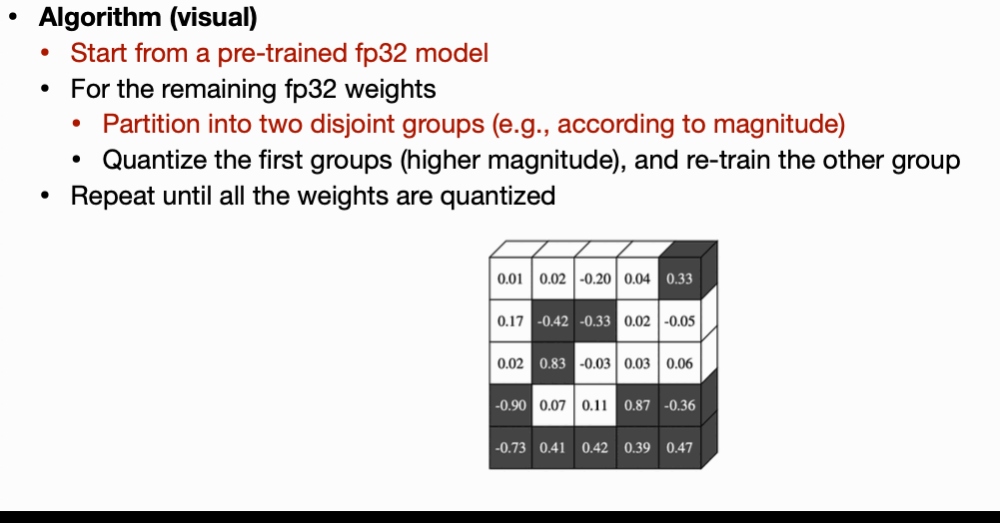
Reference. MIT-TinyML-lecture06-Quantization-2
6. Mixed-precision quantization
마지막으로 레이어마다 Quantization bit를 다르게 가져가면 어떨지에 대해서 이야기한다. 하지만 경우의 수가 8bit 보다 작거나 같게 Quantization을 할 시, weight와 activation로 경우의 수를 고려를 한다면 N개 레이어에 대해서 \((8 \times 8)^N\)라는 어마어마한 경우의 수가 나온다. 그리고 이에 대해서는 다음 파트에 나갈 Neural Architecture Search(NAS) 에서 다룰 듯 싶다.
6.1 Uniform Quantization

6.2 Mixed-precision Quantization

6.3 Huge Design Space and Solution: Design Automation

Design Space: Each of Choices(8x8=64) → \(64^n\)

Reference. HAQ: Hardware-Aware Automated Quantization with Mixed Precision [Wang et al., CVPR 2019] Result in Mixed-Precision Quantized MobileNetV1

Reference. HAQ: Hardware-Aware Automated Quantization with Mixed Precision [Wang et al., CVPR 2019] - This paper compares with Model size, Latency and Energy
가장 마지막에 언급하는 Edge와 클라우드에서는 Convolution 레이어의 종류 중 더하고 덜 Quantization하는 레이어가 각각 depthwise와 pointwise로 다르다고 이야기한다. 이 내용에 대해서 더 자세히 이해하기 위해서는 아마도 NAS로 넘어가봐야 알 수 있지 않을까 싶다.
Quantization Policy for Edge and Cloud

Reference. HAQ: Hardware-Aware Automated Quantization with Mixed Precision [Wang et al., CVPR 2019]
7. Reference
- TinyML and Efficient Deep Learning Computing on MIT HAN LAB
- Youtube for TinyML and Efficient Deep Learning Computing on MIT HAN LAB
- Deep Compression [Han et al., ICLR 2016]
- Quantization and Training of Neural Networks for Efficient Integer-Arithmetic-Only Inference [Jacob et al., CVPR 2018]
- With Shared Microexponents, A Little Shifting Goes a Long Way [Bita Rouhani et al.]
- Data-Free Quantization Through Weight Equalization and Bias Correction [Markus et al., ICCV 2019]
- Estimating or Propagating Gradients Through Stochastic Neurons for Conditional Computation [Bengio, arXiv 2013]
- Binarized Neural Networks: Training Deep Neural Networks with Weights and Activations Constrained to +1 or −1. [Courbariaux et al., Arxiv 2016]
- XNOR-Net: ImageNet Classification using Binary Convolutional Neural Networks [Rastegari et al., ECCV 2016]
- Ternary Weight Networks [Li et al., Arxiv 2016]
- Trained Ternary Quantization [Zhu et al., ICLR 2017]
- DoReFa-Net: Training Low Bitwidth Convolutional Neural Networks with Low Bitwidth Gradients [Zhou et al., arXiv 2016]
- WRPN: Wide Reduced-Precision Networks [Mishra et al., ICLR 2018]
- PACT: Parameterized Clipping Activation for Quantized Neural Networks [Choi et al., arXiv 2018]
- HAQ: Hardware-Aware Automated Quantization with Mixed Precision [Wang et al., CVPR 2019]